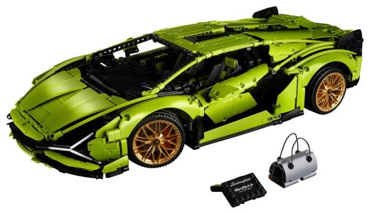
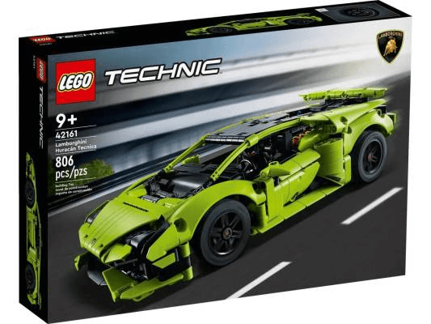
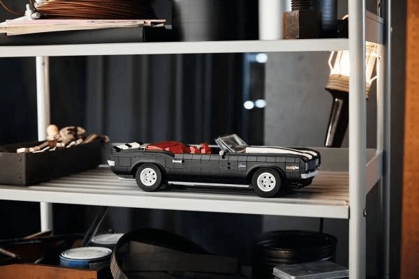

Si lo que quieres es crear una réplica de una auténtica bestia con todo lujo de detalles, este es sin duda el proyecto que estás buscando. Entre sus funciones de gran realismo se encuentran el mecanismo de transmisión de 8 velocidades, que se activa mediante la palanca de cambios móvil, el motor V12 con pistones móviles y la tracción a las 4 ruedas. Usa el volante para posicionar el coche y comprueba después la suspensión delantera y trasera. Esta maqueta, al igual que el superdeportivo de la vida real, posee las clásicas puertas de tijera. Se trata sin duda de una réplica profesional, para la cual tendrás que tener más que paciencia debido a sus más de 3.500 piezas. Se trata de una maqueta difícil de encontrar, de ahí su elevado precio (449,99 euros).
Para aquellos amantes del motor que no cuentan con el tiempo -o la paciencia- para montar una bestia como el modelo anterior LEGO también tiene una opción que, además de ser más sencilla, con 397 piezas, también es más asequible (52,99 euros). Se trata del Lamborghini Huracán Tecnica, y es una fantástica iniciación al mundo de la ingeniería con una intuitiva guía que podrán disfrutar hasta los más pequeños, ya que la edad mínima recomendada es de 9 años.
Con un aspecto bastante parecido al Dodge Charger que conduce Vin Diesel en la saga de “Fast and Furious” este Chevrolet Camaro Z28 promete ser un gran entretenimiento para aquellos defensores de los coches americanos. Con casi 1.500 piezas y un precio medianamente asequible (169,99 euros) este Chevrolet es una gran opción para aquellos que, una vez iniciados en el mundo de las maquetas de coches, quieren dar un paso más. Este modelo viene con una gran cantidad de opciones para que puedas personificarlo a tu manera: Techo descapotable, faros clásicos o escamoteables, franjas de competición grises o rojas... Eres tú quien decide cómo quiere dejarlo.
